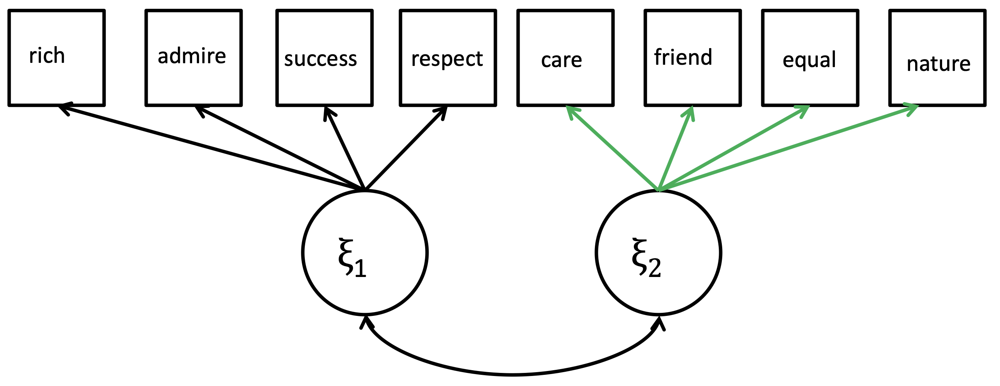
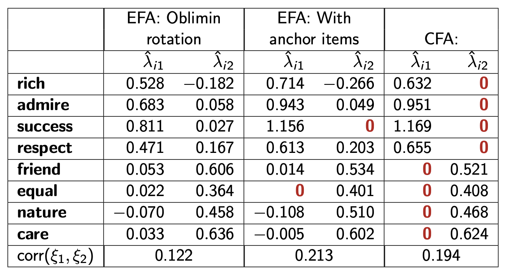

9 Multivariate Statistics
So far, we have focused on models with one outcome variable \(Y\). However, in many statistical situations, we have multiple outcome variables.
In this chapter, we start by discussing dimensional reduction through principle components analysis. Then, we discuss a series of latent variable models. Finally, we conclude with clustering and structural equation models.
9.1 Principle Components
Principle components analysis (PCA) is a way to combine multiple observed variables into fewer variables, which is a process called dimensional reduction. We start off with a set of observed variables \(\b x_t = (x_1, x_2, \dots, x_p)_t\) for each observation \(t\). Each observed variable \(x_i\) has a variance \(\V x_i\), and their total variance is \(\V x_1 + \dots + \V x_p\).
PCA takes these \(p\) number of original variables \(\b x_t\), and calculates a set of \(p\) new variables called principle components \(y_1, \dots, y_p\). Each principle component \(y_j\) is made up a linear combination of the original variables:
\[ \begin{align} y_1 = & \ a_{11}x_1 + a_{21}x_2 + \dots + a_{p1}x_p \\ y_2 = & \ a_{12}x_1 + a_{22}x_2 + \dots + a_{p2}x_p \\ & \qquad \vdots \\ y_p = & \ a_{1p}x_1 + a_{2p}x_2 + \dots + a_{pp}x_p \\ \end{align} \]
With \(a_{ij}\) being the weights of the linear combinations. The larger a weight is for a specific \(x_i\) in a specific principle component \(y_j\), the more that principle component is measuring that \(x_i\). We can look at which weights are larger for which variables in a specific \(y_j\) to see and interpret what any \(y_j\) is measuring. The sum of all the weights for each principle component \(y_j\) should be 1. We can rewrite the above in terms of linear algebra:
\[ y_j = \b a^\top_j \b x \quad \iff \quad y_j = \begin{pmatrix} a_{ij} & a_{2j} & \dots & a_{pj} \end{pmatrix} \begin{pmatrix} x_1 \\ x_2 \\ \vdots \\ x_p \end{pmatrix} \]
And all the principle components \(\b y = (y_1, \dots, y_p)\) can be expressed as
\[ \b y = \b A^\top \b x , \quad \b A = \begin{pmatrix} \b a_1 & \b a_2 & \dots & \b a_p \end{pmatrix} \tag{9.1}\]
All of the principle components together have the same variance as the original variables: \(\sum \V y_j = \sum \V x_i\). Thus, the new principle components carry the same information/variation as the original variables, just with a different distribution between each variable. Each principle component is uncorrelated with the next principle component - thus each PC conveys distinct aspects of the data.
The weights \(a_{ij}\) of the PCs are calculated from eigenvalue decomposition of the covariance matrix \(\b\Sigma\) of observed variables \(x_1, \dots, x_p\). We assume that \(\b\Sigma\) has \(p\) distinct positive eigenvalues, denoted \(\lambda_1 > \lambda_2 > \dots > \lambda_p > 0\). Each eigenvalue \(\lambda_j\) corresponds to an eigenvector \(\b a_j\), which is the weights vector of the \(j\)th principle component:
By applying eigenvalue decomposition to matrix \(\b\Sigma\), we get a matrix \(\b A\) made up of eigenvectors of \(\b\Sigma\), and a diagonal matrix \(\b D\) with eigenvalues \(\lambda\) on its diagonal:
\[ \b\Sigma = \b{ADA}^{-1}, \quad \b D = \begin{pmatrix} \lambda_1 & & \\ & \lambda_2 & \\ & & \ddots \end{pmatrix}, \quad \b A = \begin{pmatrix} \b a_1 & \b a_2 & \dots & \b a_p \end{pmatrix} \]
The matrix \(\b A\) is the same as from eq. 9.1, and each column are the weights of a principle components. The variance of each PC \(y_j\) is equivalent to \(\lambda_j\), the \(j\)th eigenvalue.
Principle components are labelled in order of the variance they contain. So, principle component \(y_1\) will have more variance than principle component \(y_2\), and so on. The proportion of total variance in all of the \(x_1, \dots, x_p\) the first \(q\) principle components will explain is
\[ \frac{\sum_{j=1}^q \V y_j}{\sum_{i=1}^p \V x_i} = \frac{\lambda_1 + \lambda_2 + \dots + \lambda_q}{\lambda_1 + \lambda_2 + \dots + \lambda_1 + \dots + \lambda_p} \]
Frequently, the first few principle components will explain around 70-80% of the total variation in all of \(x_1, \dots, x_p\). Thus, we can reduce the number of variables from \(p\) to just 2-3 principle components. This can be very useful when we want to reduce the computation power needed to estimate models, or to reduce multicollinearity issues (since each principle component is uncorrelated with each other).
We will discuss the practical implementation of PCA in the multivariate methods chapter in the applied section.
9.2 Cluster Analysis
9.3 Latent Variable Models
Latent variables \(\xi\) (also called factors) are variables that we cannot directly measure. However, these latent variables \(\xi\) can be measured through observed outcome variables \(Y_1, \dots, Y_p\), called items.

For example, the above shows how the latent variable of personality can be measured by 4 observable outcomes \(X_1, \dots, X_4\). This implies that the observed items \(Y_1, \dots, Y_p\) have some sort of relationship with the latent factor \(\xi\). Latent variable models aim to model this relationship for us to uncover and measure the normally unobservable latent variable \(\xi\).
There are a variety of different latent variable models, that deal with different types of items and factors.
Factor analysis assume that we have a set of continuous observed items \(Y_1, Y_2, \dots, Y_p\), that are all the result of some continuous latent factor variable \(\xi\).
Definition 9.1 (Factor Analysis) The latent factor \(\xi\) is assumed to be distributed \(\xi \sim \mathcal N(\kappa = 0, \ \phi = 1)\). We assume that each item \(X_i\) is normally distributed, and is related to the latent factor \(\xi\) by a linear model:
\[ Y_i = \tau_i + \lambda_i\xi + \delta_i, \quad \delta_i \sim \mathcal N(0, \theta_{ii}) \]
Where \(\lambda_i\) is the slope (called the factor loadings), which determine the relationship/covariance between factor \(\xi\) and a specific item \(Y_i\).
\(\delta_i\) is the error term, and is called the unique factor - the part of the item not explained by the factor.
We make a few assumptions on this linear model above.
- Error terms \(\delta_i\) for each regression model between \(\xi\) and \(Y_1, \dots, Y_p\) is normally distributed with a mean of 0. \(\delta_i \sim \mathcal N(0, \theta_{ii})\).
- Error terms \(\delta_1, \dots, \delta_p\) of each model \(i\) are uncorrelated with each other. This implies that correlations between \(Y_1, \dots, Y_p\) are entirely explained by the latent factor \(\xi\).
- Factor \(\xi\) is uncorrelated with the error term \(\delta_i\) (exogeneity).
Given the linear models between \(Y_i\) and \(\xi\), we know that \(\E(Y_i | \xi) = \tau_i + \lambda_i \xi\). Since \(X_i\) is also assumed to be normally distributed, we can determine the distribution of each \(X_i\) as
\[ Y_i \sim \mathcal N(\tau_i + \lambda_i \xi, \ \ \lambda_i^2 \phi + \theta_{ii}) \]
Item Response Theory (IRT), also called Latent Trait Models, assume that we have at least 3 binary observed items \(Y_1, \dots, Y_p\). We have one continuous latent factor \(\xi\).
Definition 9.2 (IRT) We assume the factor \(\xi\) be normally distributed \(\xi \sim \mathcal N(\kappa = 0, \phi = 1)\).We assume that the relationship between an observed item \(Y_i\) and the latent factor \(\xi\) to be of the form of a binary logistic regression:
\[ \log\left(\frac{\pr_i(\xi)}{1 - \pr_i(\xi)}\right) = \tau_j + \lambda_j \xi,\quad \pr_i(\xi) = \P(Y_i = 1|\xi) \]
The intercept parameter \(\tau_j\) is known as the difficult parameter. It is the probability of a item \(Y_i\) equalling 1, when the factor \(\xi = 0\).
The coefficient \(\lambda_i\) is the factor loading, which is also known as the discrimination parameter. This explains the relationship between the item \(Y_i\) and \(\xi\).
We can take the above equation, exponenting both sides and solving for \(\pr_i(\xi)\), getting:
\[ P(Y_i = 1|\xi) = \pr_i(\xi) = \frac{e^{\tau_i + \lambda_i\xi}}{1+e^{\tau_i + \lambda_i\xi}} \]
This allows us to get fitted probabilities of how \(\xi\) affects the probability of an item being \(Y_i = 1\). These fitted probabilities are called item response curves.
IRT can also be applied to items with three or more categories, although this is quite rare. We will use an ordinal logistic regression model (with cumulative probabilities), or a multinomial logistic regression model instead.
Latent Class Models assume that we have at least 3 categorical observed items \(Y_1, \dots, Y_p\). We have one categorical latent factor \(\xi\).
Definition 9.3 (Latent Class Models) We assume the items \(Y_1, \dots, Y_p\) are observed categorical items, with each item \(Y_j\) having \(K_j\) number of categories. Let factor \(\xi\) be categorical with \(C\) categories/classes, where \(C\) is chosen by the user.
Our parameter of interest is the item response probability, which is the probability of an item \(Y_i\) equals category \(k\), given \(\xi\) equals category \(c\):
\[ \pr_{ikc} = \P(Y_i = k|\xi = c) \]
The model that describes the relationship between item \(Y_i\) and factor \(\xi\) is given by:
\[ \log\left(\frac{\pr_{ikc}}{\pr_{i1c}}\right) = \tau_{ik} + \sum\limits_{d=2}^C \lambda_{ikd}D_d \]
Where \(\lambda_{ik1} = 0\), and \(D_d\) are dummy variables for latent classes/categories \(d = 2, \dots, C\) of \(\xi\).
Unlike the other two models, we cannot assume \(\xi\) is normally distributed, since it is categorical. Instead, we assume \(\xi\) is categorical with probabilities \(\alpha_c = \P(\xi = c)\).
We will explore the implementation of these models later in the applied chapter. We discuss the estimation and results of these models below.
9.4 Estimation with MLE
We will focus mostly on factor analysis, since the estimation is the most straight forward, but similar principles apply to all three of the latent variable models.
Given the linear models between \(Y_i\) and \(\xi\), we know that \(\E(Y_i | \xi) = \tau_i + \lambda_i \xi\) for all latent variable models. In factor analysis (definition 9.1) , since \(X_i\) is also assumed to be normally distributed, we can determine the distribution of each \(X_i\) as
\[ Y_i \sim \mathcal N(\tau_i + \lambda_i \xi, \ \ \lambda_i^2 \phi + \theta_{ii}) \]
Our theoretical variance-covariance matrix \(\b\Sigma\) between \(X_1, \dots, X_p\), where the diagonals are the variances of \(X_1, \dots, X_p\), and the non-diagonals are \(Cov(X_n, X_m)\) will be
\[ \b\Sigma =\begin{pmatrix} \lambda_1^2 \phi + \theta_{11} & \lambda_1\phi\lambda_2 & \dots & \lambda_1 \phi \lambda_p \\ \lambda_2 \phi \lambda_1 & \lambda_2^2 \phi + \theta_{22} & \dots & \lambda_1 \phi \lambda_p \\ \vdots & \dots & \ddots & \vdots \\ \lambda_p\phi\lambda_1 & \lambda_p \phi \lambda_2 & \dots & \lambda_p^2 \phi + \theta_{pp} \end{pmatrix} \]
The estimation process is to find the values of \(\lambda_i\) and \(\theta_{ii}\) that make the above hypothetical covariance matrix (since \(\phi\) is assumed to be 1), as close to our observed covariance matrix from our sample data.
We can rewrite our covariance matrix \(\b\Sigma\) as:
\[ \b\Sigma = \b{\Lambda\Lambda^\top} + \b\Theta, \quad \b\Lambda = (\lambda_1, \dots, \lambda_p)^\top, \ \b\Theta = \theta_{ii} \b I \]
Where \(\b\Lambda\) is a vector of factor loadings \(\lambda_i\), and \(\b\Theta\) is a diagonal matrix with diagonals being \(\theta_{ii}\). Our goal is to find the values of \(\b\Lambda\) and \(\b\Theta\) that maximise the likelihood of observing the data given the model. Thus, we can use maximum likelihood estimation.
For simplicity, we will not derive every step in detail. Based on the multivariate normal distribution, we can establish that the log-likelihood funcntion is:
\[ \begin{align} \ell(\b\Lambda, \b\Theta; \b S) & = -\frac{n}{2}(\log |\b\Sigma| + \mathrm{Tr}(\b{S \Sigma}^{-1}) \\ & = -\frac{n}{2}(\log |\b{\Lambda\Lambda^\top} + \b\Theta | + \mathrm{Tr}(\b{S}(\b{\Lambda\Lambda^\top} + \b\Theta )^{-1}) \end{align} \]
Where \(\b S\) is the sample covariance matrix, \(\b\Sigma\) is still our theoretical-implied covariance matrix from above, and \(\mathrm{Tr}(\cdot)\) is the trace of a matrix.
Under the assumptions we made earlier (standardising \(\xi\) to be a standard normal distribution), we can use an iterative algorithm such as Newton-Raphson to estimate this model. At convergence, we will get estimated \(\hat{\b\Lambda}\) and \(\hat{\b\Theta}\).
Since these models are estimated with maximum likelihood estimation, we can use wald and likelihood ratio tests, as well as information criterion statistics.
9.5 Interpretation of Models
Our \(\hat\lambda_i\) will be the estimated covariances/relationships between any item \(X_i\) and the latent factor \(\xi\). We can interpret \(\xi\) based on the items \(X_i\) that have the largest factor loadings \(\hat\lambda_i\).
Generally, if the factor \(\xi\) has very close to 0 loadings for a certain item \(Y_i\), that factor is probably not measuring that item.
Once we have estimated the factor analysis model, we can then use \(Y_1, \dots, Y_k\) to create values for the latent variable \(\tilde\xi_t\) for each observation \(t\), called factor scores. The exact formula differs for the model.
The factor scores in factor analysis are given by:
\[ \tilde\xi_t = w_0 + w_1 X_{t1} + w_2 X_{t2} + \dots + w_p X_{tp} \]
Which are linear combinations of \(X_1, \dots, X_p\), with weights \(w_i\) determined by the strength of the relationship between \(X_i\) and \(\xi\) as estimated by \(\hat\lambda_i\) and the unique variance \(\theta_{ii}\).
The factor scores in IRT are caculated as the estimated mean of the factor \(\xi\), given the values of items \(Y_1, \dots, Y_p\) for observation \(t\):
\[ \tilde\xi = \E(\xi | Y_1, \dots, Y_p) \]
The scores will be a linear combination of items \(Y_1, \dots, Y_p\):
\[ \tilde\xi_t = \hat\lambda_1 Y_{t1} + \hat\lambda_2Y_{t2} + \dots + \hat\lambda_p Y_{tp} \]
Instead of predicting a value of \(\xi\) (since it is categorical in latent class models), we will classify observations \(t\) into one of the categories/classes of \(\xi\). We estimate the probability of an observation being in every class \(c\), given their values of \(Y_1, \dots, Y_p\):
\[ \hat\P(\xi = c|Y_1 = k_1, Y_2 = k_2, \dots, Y_p = k_p), \quad \forall \ c \]
And whichever category \(c\) for which the calculated probability is the highest is the category we assign unit \(t\) to in \(\tilde\xi\).
These factor scores will allow us to estimate each individual observation \(t\)’s value \(\xi_t\), which will allow us to use the factor in descriptive statistics, or in other statistical models.
For factor analysis specifically, recall that when we assumed \(\xi\) is standardly normally distributed, the variances of \(X_i\) (from the matrix above) become:
\[ \V X_i = \lambda_i^2 + \theta_{ii} \]
- \(\lambda_i^2\) is the part of the variance in \(X_i\) explained by the factor \(\xi\). This is known as the communality of \(X_i\).
- \(\theta_{ii}\) is the part of \(X_i\) not explained by the factor \(\xi\), and is called the unique variance.
- The proportion \(\rho_i =\lambda_i^2 / (\lambda_i^2 + \theta_{ii})\) is the proportion of variance in \(X_i\) explained by our factor \(\xi\), called the reliability. This is the \(R^2\) of factor analysis. If our items \(Y_i\) are standardised, then \(\V Y_i = 1\), and the reliability can simply be calculated as \(1-\theta_{ii}\).
In Item Response Theory, the same ideas do not directly apply. The discrimination parameter \(\lambda_i\) can be thought of the part of \(Y_i\) that is explained by \(\xi\), and the difficulty parameter \(\tau_i\) can be thought of the unique part of the item. However, neither are directly interpretable as variances unlike factor anlaysis.
9.6 Multiple Latent Factors
We can have more than one latent factor \(\b\xi = (\xi_1, \dots, \xi_q)\). We assume all are standardly normally distributed as before. Each item \(X_1, \dots, X_p\) is now related to each factor \(\xi_1, \dots, \xi_q\) with a regression:
\[ X_i = \tau_i + \lambda_{i1}\xi_1 + \lambda_{i2}\xi_2 + \dots + \lambda_{i1} \xi_q + \delta_i, \quad \delta_i\sim\mathcal N(0, \theta_{ii}) \]
Each factor can be correlated with each other - which means \(Cov(\xi_j, \xi_k) = \phi_{jk}\) must be estimated as well. Because of the additional parameters, identification becomes more tricky. The number of factors \(q\) must be small enough given the number of items \(p\) in order for our model to be identified:
\[ df = \frac{(p-q)^2-(p+1)}{2}≥ 0 \]
Finally, we have an issue of factor rotation - this is because our different factors can be rotated in infinitely many ways, and still produce the same model fit. For example, take two factors \(\xi_1\) and \(\xi_2\). Let us transform them to 2 new factors with some linear combinations:
\[ \begin{align} \xi_1^* & = a_{11}\xi_1 + a_{12}\xi_2 \\ \xi_2^* & = a_{21}\xi_1 + a_{22}\xi_2 \\ \end{align} \]
These transformations can be interpreted as a rotation (change in coordinate axes) of the space of these two factors. However, both \((\xi_1, \xi_2)\) and \((\xi_1^*, \xi_2^*)\) produce the exact same fit of the model for the observed items. In fact, for any choice of coefficients \(a\) (infinitely many choices), the model fit will be the same. This is a unique identification issue.
The default rotation in many calculations orthogonal (perpendicular), which means factors are uncorrelated. The result from this estimation is very similar to PCA, and is good for dimensional reduction.

However, for interpretation ease, it is often useful to use oblique rotations, where factors can be correlated. This is because oblique rotations will have more factor loadings of 0, which will allow us to be more clear with what a factor is measuring.
Also note that in terms of interpretation, \(\hat\lambda_{ij}\) is only the covariance between \(X_i\) and \(\xi_j\) if all factors are uncorrelated. If factors are correlated, we lose this nice interpretation.
9.7 Confirmatory Analysis
Confirmatory analysis is more about using our latent variable models to test theories we already have. Instead of letting the estimation process estimate component loadings for all \(X_i\) and \(\xi_j\), we might set some component loadings to 0 based on our theoretical beliefs.
A loading of 0 implies that a factor \(\xi_j\) is not being measured by an observed item \(X_i\). Ideally for confirmatory analysis, we want a structure where each item \(X_i\) has only one non-0 loading - thus we know exactly what factor \(X_i\) is measuring. Below, we can see half of the items measure \(\xi_1\), and the other half measure \(\xi_2\):

We can see the factor loadings of this model below. The first two columns are exploratory (normal) analysis, and the right column is confirmatory analysis. Note how each item (the rows) for the CFA has only one non-zero component loading.

For model identification to be possible with this structure, we need at least 2 items per factor, and for a 1-factor model, we need 3 items.
We can use a variety of significance tests (like the wald test with hypothesis \(\lambda_i = 0\)) to test if a certain component should be set to 0 or not.
We will discuss the practical implementation of confirmatory analysis in the multivariate methods chapter in the applied section.